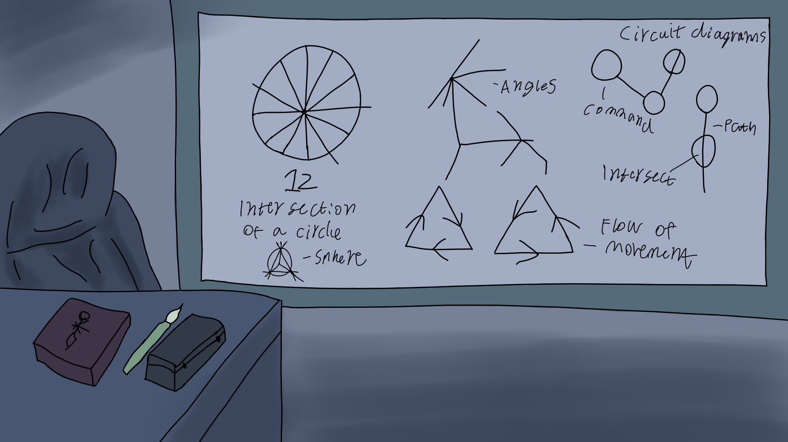

--- Sub Download Menus ---
Software Downloads
2024
July
Block maker - Simple paint like program, use left and right mouse click.
Click The Block - Click the blue block for points, red block to reset.
Go To Block - Use the WASD keys to move to the blue block.
Grid Movement - Use the WASD keys to move around a grid.
Hitbox Test - Use the WASD keys to enter the other block and test a hitbox.
Music and image of this page
